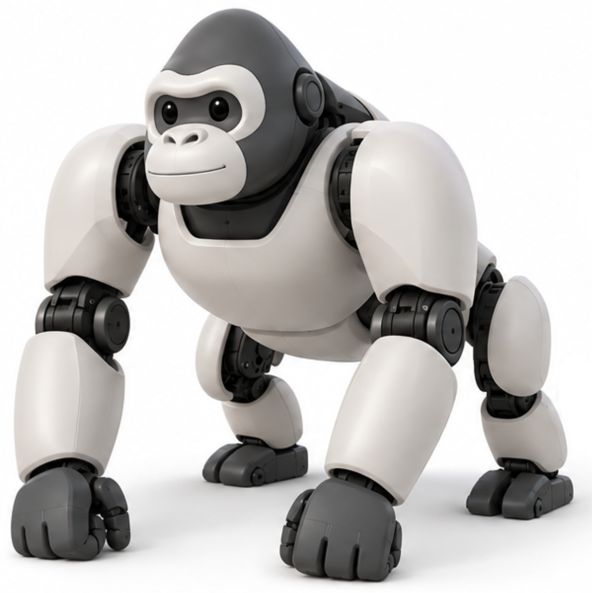
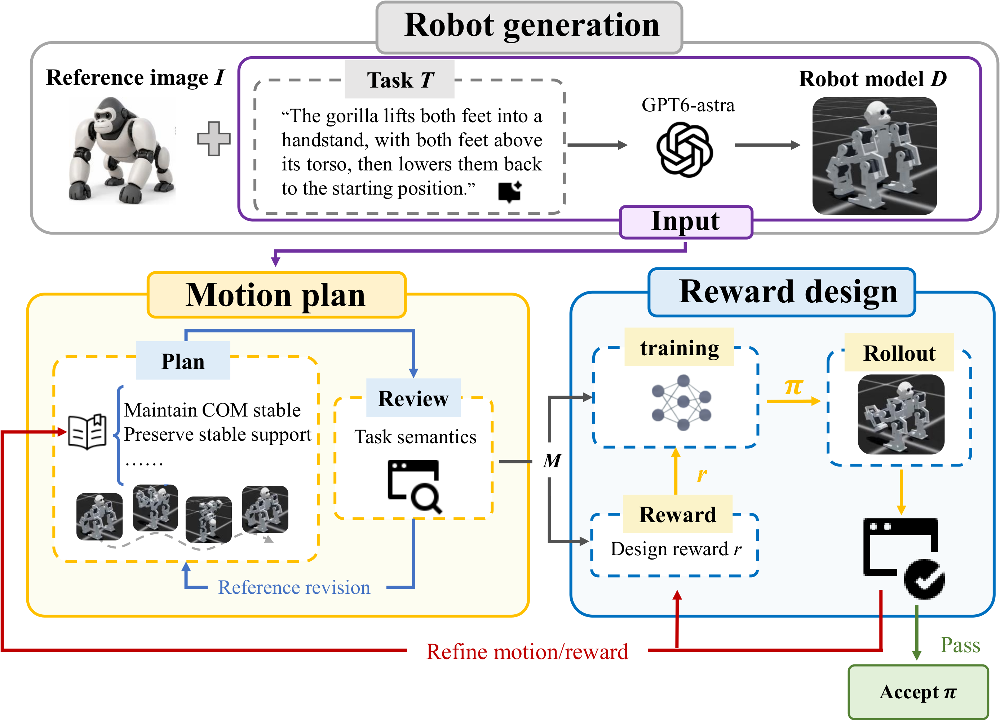
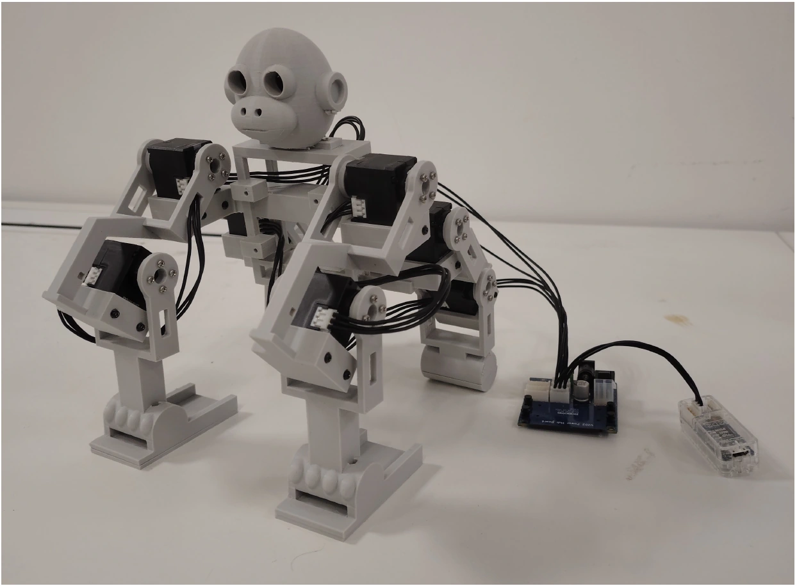

Agentic Robot Creation through Generation, Verification, and Revision
Xuebing Li1Yibo He1Sitong Liu1Ran Ji1Jiayuan Gu1
1 ShanghaiTech University
Learned behaviors across four embodiments Simulation · original playback speedDiscover the project ↓
Abstract
Can an AI agent turn high-level user intent into a functioning robot and teach it how to behave? We study this question from two complementary aspects: embodiment and behavior creation. For embodiment creation, we investigate how well current multimodal models capture mechanical requirements, and introduce computational metrics for evaluating generated designs before fabrication.
For behavior creation, we present RoboForge, an agentic framework that turns task specifications into executable policies through motion generation, policy learning, and execution-grounded revision. Given a robot embodiment and task, the agent generates a reference motion, configures the learning objective, and trains a policy. Crucially, motion remains in the loop: rollout feedback can revise the reference motion, reward, or both. We evaluate a generated embodiment across multiple MLLMs and behavior creation across four diverse robots against reward-refinement and one-shot motion baselines. Our computational metrics expose recurring mechanical failures in generated designs, while behavior experiments show that execution-grounded refinement improves task-level behavior and execution quality. Finally, we fabricate an agent-generated Gorilla and directly deploy learned behaviors on the physical robot.
Evaluating generated robot designs
A reference image, target tasks, and real actuator assets guide multimodal models to generate part geometry, an assembled robot, and a simulation model. We examine the resulting designs through a Gorilla case study.
Reference image & tasks

Walking
Walk forward using both hands and feet.
Hand waving
Raise one hand and wave it forward, then place it back on the ground.
Generated robot
Loading 3D model…
Drag to rotate · scroll or pinch to zoom
Left: A reference image generated by GPT-6 Astra and the target tasks. Right: The generated Gorilla assembly, including its structure and actuators.
Reveal mechanical failures before fabrication. Our computational metrics examine three aspects of a generated design:
Design & assembly. Part validity, printability, interface fit, assembly access, and interference.
Generated by GPT-6 Astra, GPT-5.6 Sol, GPT-5.6 Terra, and GPT-5.5 (left to right). Close-ups inspect mounting interfaces and expose component interference.
RoboForge: motion in the learning loop
Given a robot model and a task description, RoboForge first generates and verifies a reference motion. The agent plans body and limb trajectories, solves the remaining joint motion with inverse kinematics, and checks joint limits, self-collision, and task consistency. It then configures a reference-guided reward and uses reinforcement learning to train a policy.
RoboForge keeps motion in the loop. The agent evaluates policy rollouts against task semantics and general execution criteria, including balance, stable support, and motion quality. When a policy falls short, it checks whether the reference motion is suitable for the task and whether the reward provides effective learning guidance. It then revises the motion, reward, or both before continuing policy learning. Crucially, execution feedback can revise the reference motion itself, allowing RoboForge to improve the behavior the policy is asked to learn while preserving the robot and task.

Generate a reference, learn a policy, inspect execution, and revise.
Diverse Robot Behaviors
Across 19 natural-language tasks and four robot embodiments, RoboForge learns a wide range of locomotion, stylized behaviors, and whole-body skills. Compared with baseline methods, it produces behaviors that better match task intent, with more stable support and smoother motion.
Go2
Bow
Task: Extend both front legs and lower the chest toward the ground, keeping the hindquarters raised. Sway gently, then return to standing.
GPT
Eureka-style
One-shot Motion
RoboForge (ours)
Original speed
Microduck
Look around
Task: Stand on both feet, turn the head to look left and right, then face forward again.
GPT
Eureka-style
One-shot Motion
RoboForge (ours)
Original speed
Ostrich
Happy walk
Task: Walk forward happily with lively steps and a gently bobbing head.
GPT
Eureka-style
One-shot Motion
RoboForge (ours)
Original speed
Gorilla
Handstand
Task: The gorilla lifts both feet into a handstand, with its feet above its torso, then lowers them back to the starting position.
GPT
Eureka-style
One-shot Motion
RoboForge (ours)
Original speed
Refining the Generated Motion
RoboForge keeps motion in the learning loop: policy execution feedback can reshape the reference motion itself. A motion may satisfy the task description and pass kinematic checks yet remain difficult for the robot to execute. When a policy falls short of task semantics or execution criteria such as balance, stable support, and motion quality, the agent examines both the reference motion and the reward to diagnose the difficulty.
The agent can revise posture, limb trajectories, timing, and support coordination to address the diagnosed difficulty, preserving task semantics and parts of the behavior that already work. The revised motion, together with any needed reward changes, guides the next round of policy learning toward a more learnable realization. This lets RoboForge improve how the task is realized while preserving what the task requires.
Go2 · Lie-walk
Task: Walk forward slowly in a low crouch with small, careful steps.
Initial motionTrial 1
Final motionTrial 3
Original speed
Initial motion
A standing-to-crouch transition followed by low, alternating steps.
Final motion
Continuous body shifts toward the supporting legs, with increased swing-foot clearance.
Gorilla · Handstand
Task: The gorilla lifts both feet into a handstand, with its feet above its torso, then lowers them back to the starting position.
Initial motionTrial 1
Final motionTrial 3
Original speed
Initial motion
The torso rotates into a handstand.
Final motion
The legs fold before inversion, with flat palms through the handstand and recovery.
Real-World Demonstrations
We directly deploy RoboForge’s simulation-trained walking and hand-waving policies on our 3D-printed, eight-DoF Gorilla. The robot performs both tasks with coordinated motion and stable support, demonstrating effective transfer from simulation to real-world execution.

Assembled eight-DoF Gorilla
Walking
Task: Walk forward using both hands and feet.
Hand waving
Task: Raise one hand and wave it forward, then place it back on the ground.